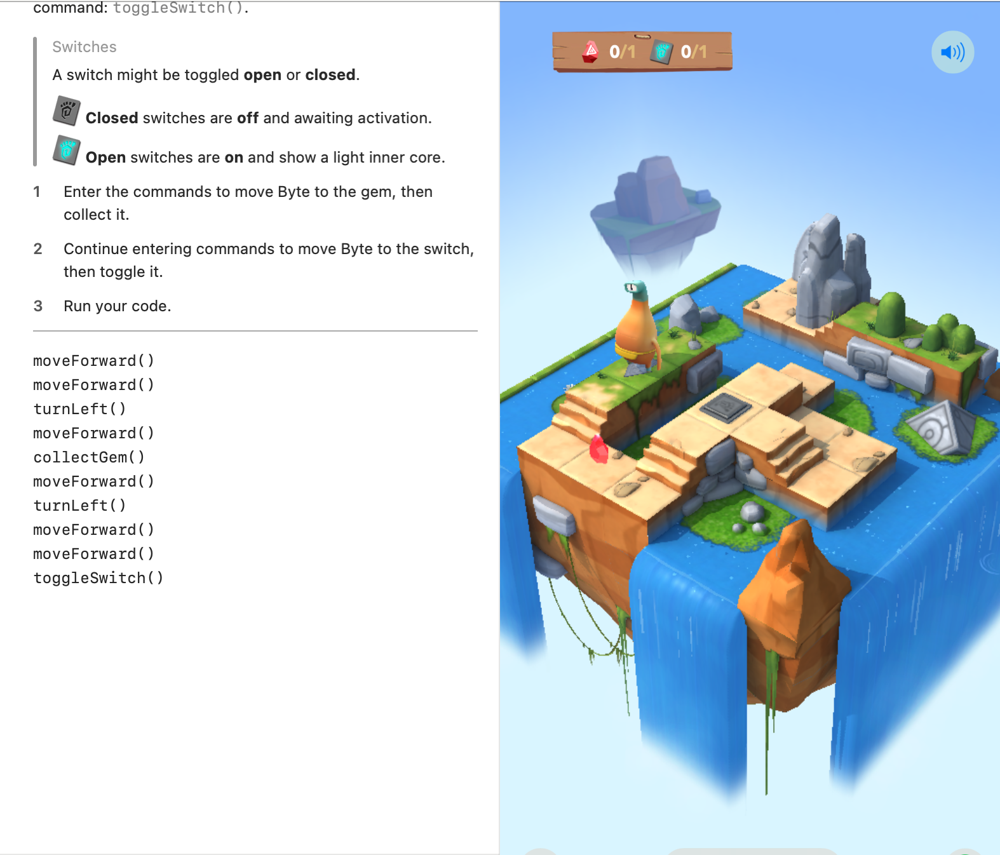
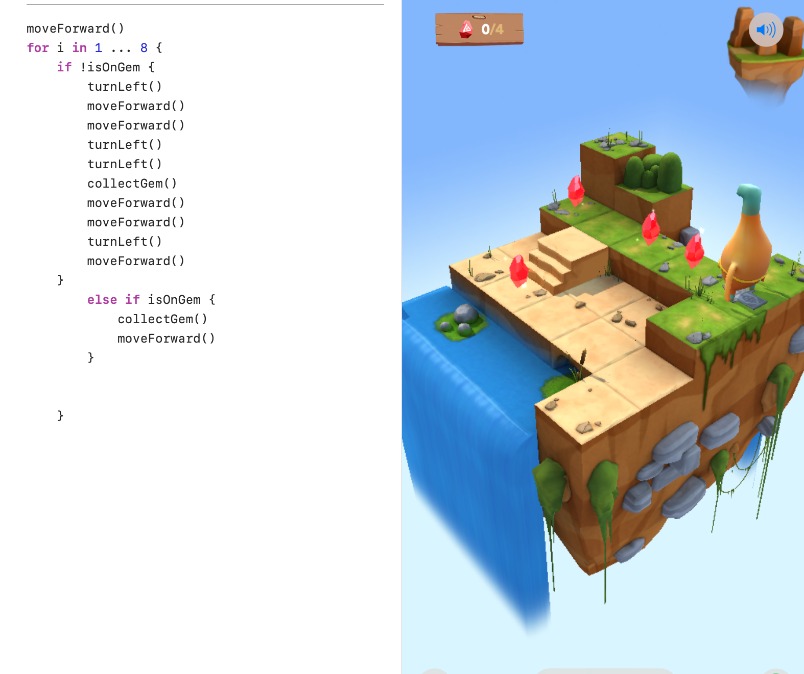

What I Learned
In this course, I learned about the following programming concepts:
- Commands: Instructions given to a computer to perform specific tasks.
- For Loops: Control flow statements used to repeat a block of code.
- Conditionals: Statements that allow execution of code based on conditions.
- Logical Operators: Symbols used to perform logical operations.
- Variables: Named storage locations in memory for holding data.
- Types: Classification of data, like integers and strings.
- Initialization: Assigning initial values to variables.
- Functions: Reusable blocks of code that perform specific tasks.
- Parameters: Variables passed into functions to provide input values.
Visuals and Media
Here are some resources related to the course:

